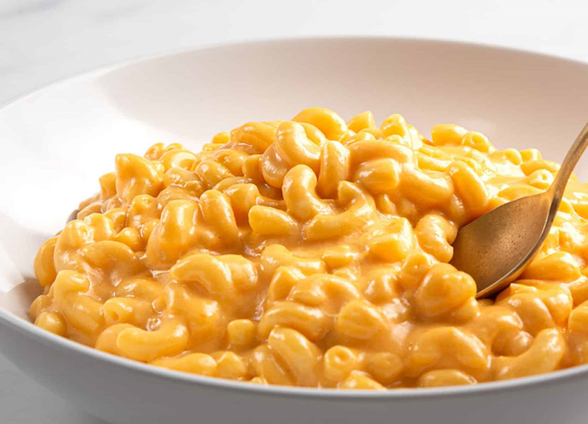

Mac and Cheese

Mac'n'cheese Tarifi İçin Malzemeler
- 1 paket dirsek makarna (500 gr)
- 4 yemek kaşığı tereyağı
- 1 yemek kaşığı un
- 1 su bardağı süt
- 2 su bardağı cheddar peyniri
- Yarım su bardağı parmesan peyniri
- Yarım su bardağı ekmek kırıntısı
Mac'n'cheese Tarifi Nasıl Yapılır?
- Makarnayı bol suda haşlayın ama biraz diri kalsın çok yumuşamasın. Süzgece alın ama üzerine tekrardan su gezdirmeyin kendi haşlandığı su süzülsün yeterli.
- Tencereye tereyağını alın, unu biraz yağ ile kavurun. Sütü ekleyin ve kaynamaya bırakın, tel çırpacakla sürekli çırpıp pütürlerini giderin.
- Cheddar ve parmesan peyniri ekleyin, peynir eriyince makarnayı ekleyin ve iyice karıştırın.
- Ocağı kısın tencerenin kapağını kapatın makarna peynir sosunu iyice içine çekince ocağı kapatın. İsterseniz bu aşamada servise geçebilirsiniz.
- Eğer bu yemeği ana yemek yanına yapacaksanız en son bunu hazırlamanız lazım, çünkü sıcak yenmesi gerekiyor, soğudukça peyniri katılaşır.
- Eğer bu tarifi ana yemek olarak sunacaksanız, bu aşamada pişmiş tavuk eti ve mantar katılıp karıştırılır.
- Mac’n’cheese fırında da güzel oluyor, tencerede peynir ve makarnayı karıştırdıktan sonra borcama aktarın ve üzerine ekmek kırıntısı serpin fırına verin, 400 derece fırında üzeri hafif kızarıncaya kadar pişirin, ve servis edin. Afiyet olsun.
Buraya tıklayarak yapılış videosunu izleyebilirsiniz...